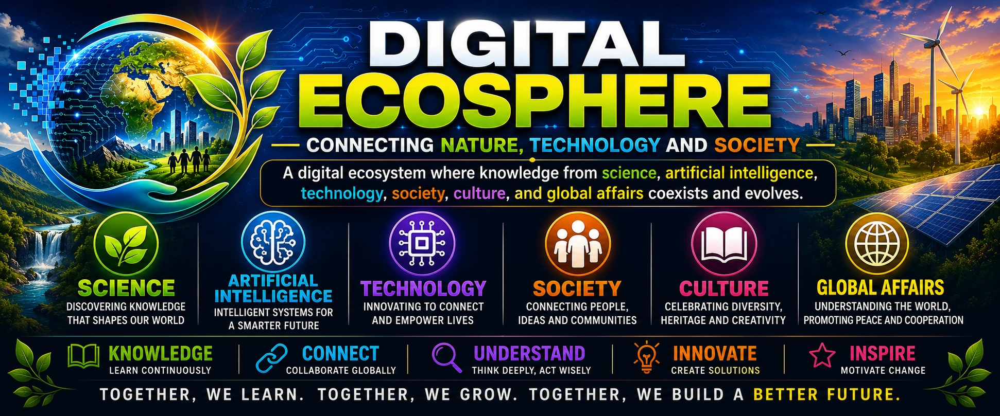

Ecologies
Visit journal

Science · Artificial Intelligence · Technology · Society · Culture
Research, knowledge, and creativity across a changing world.
Digital Ecosphere brings together scientific publications, scholarly service, editorial leadership, photography, literature, and public-interest digital initiatives by Dr. Ram C. Sharma.
Explore the website
Research and professional activities
Focused access to the principal academic and digital sections of Digital Ecosphere.
01
About Dr. Sharma & Digital Ecosphere
Academic journey, scientific perspective, and the interdisciplinary vision connecting Earth systems, technology, society, and culture.
Read the profile 02Peer-reviewed publications
Research in remote sensing, vegetation monitoring, land-cover mapping, geospatial science, and machine learning.
View publications 03Peer-review service
Verified scholarly-review activities for journals and conferences, with links to professional records.
View reviewing activity 04Editorial roles
Editorial-board service, Special Issue leadership, and papers handled across relevant academic journals.
View editorial work 05Poetry
Literary works, science-inspired writing, social reflection, psychology, politics, global affairs, and poetry for an international readership.
Explore writingsFeatured editorial activities
Special Issues and journal service
Selected editorial initiatives and professional service records presented for public reference.
Applied Sciences
Visit journal
AI-Enhanced 4D Geospatial Monitoring for Healthy and Resilient Cities
Sensors
Visit journal
Advancing Land Monitoring through Synergistic Harmonization of Optical, Radar and Lidar Satellite Technologies
Sensors
Visit journal
Advancing Land Monitoring Through Synergistic Harmonization of Optical, Radar and Lidar Satellite Technologies: 2nd Edition
Editorial board membership
International Journal of Digital Earth
Editorial service supporting scholarship on Digital Earth theories, technologies, applications, societal implications, environmental protection, and sustainable development.
Visit the journalGlobal reach
Visitors (Since Jul 2026) from around the world
This public counter displays visits by country, represented through national flags, together with the website’s page-view total.
The counter does not display visitors’ names, email addresses, or other contact details.
Professional contact
Connect with Digital Ecosphere
For research communication, scholarly service, editorial matters, or professional collaboration.
Global affiliate directory
Shop across 16 delivery markets in 17 languages.
Choose a delivery country, open an available partner shop, and keep the same language while moving between storefronts.